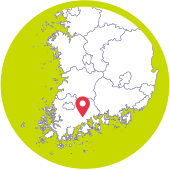
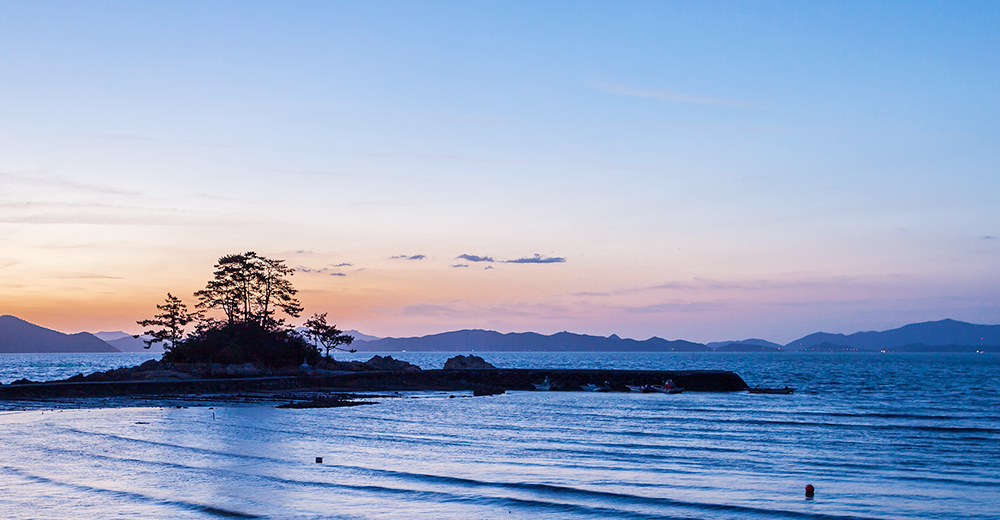

와 제 롤모델이 잡스에요!!! 아이폰 첫 출시되고 나서부터 계속 아이폰 쓰고 있는데 잡스가 너무 그리워요ㅠㅠ 지금은 돈만 벌려고 하는 것 같아서 디자인 발전도 없고ㅠㅠ와 제 롤모델이 잡스에요!!! 아이폰 첫 출시되고 나서부터 계속 아이폰 쓰고 있는데 잡스가 너무 그리워요ㅠㅠ 지금은 돈만 벌려고 하는 것 같아서 디자인 발전도 없고ㅠㅠ와 제 롤모델이 잡스에요!!! 아이폰 첫 출시되고 나서부터 계속 아이폰 쓰고 있는데 잡스가 너무 그리워요ㅠㅠ 지금은 돈만 벌려고 하는 것 같아서 디자인 발전도 없고ㅠㅠ와 제 롤모델이 잡스에요!!! 아이폰 첫 출시되고 나서부터 계속 아이폰 쓰고 있는데 잡스가 너무 그리워요ㅠㅠ 지금은 돈만 벌려고 하는 것 같아서 디자인 발전도 없고ㅠㅠ와 제 롤모델이 잡스에요!!! 아이폰 첫 출시되고 나서부터 계속 아이폰 쓰고 있는데 잡스가 너무 그리워요ㅠㅠ 지금은 돈만 벌려고 하는 것 같아서 디자인 발전도 없고ㅠㅠ
여행에 빠지다

문화 · 힐링 · 이색체험 등 테마여행 추천
국토 최남단
장흥에서
힐링을
서울의 동쪽에는 모래시계로 유명해진 정동진이 있고, 서쪽에는 아라뱃길 끝단 영종대교기념관 근처에 정서진이 있다. 그렇다면 서울의 정 남쪽은 어디일까? 그 곳은 ‘문향(文鄕)’으로 유명한 ‘전남 장흥군’이다.
글
우현석 (서울경제신문 객원기자 겸 여행 작가)
사진
장흥군청 제공
-
장흥에는 천관산문학공원을 비롯해 이청준 문학자리, 한승원의 달긷는 집 등 이 고장이 배출한 문인들을 기리는 시설들이 곳곳에 있어 문향이라 불린다. 특히 이곳에는 2016년 맨부커상으로 유명해진 소설가 ‘한강’의 아버지, 한승원이 기거하고 있다. 한승원은 장흥군 대덕면에서 태어나 1968년 신아일보 신춘문예에 ‘가증스런 바다’로 등단했다. 그는 젊은 시절 ‘포구의 달’(1983), ‘불의 딸’(1983), ‘아제아제 바라아제’(1985), ‘해산 가는 길’(1997)을 잇따라 발표하며 장안의 지가를 높였다. 20년 전 낙향한 그는 장흥군 안양면 율산마을 ‘해산토굴’에서 글도 쓰고 강의도 하고 있다. 그의 집 근처 한승원문학산책로에는 600m의 해변에 20m 간격으로 그의 시비가 세워져 있어 방문객의 피곤한 발길을 잠시 달래준다.
내친김에 해산토굴에 들러 그를 잠깐 만났다. 마침 그의 딸인 소설가 한강이 유명세를 타는 터라, 자연스레 그녀의 이름이 화제에 올랐다. 그는 “한강이 본명이에요. 내가 애들 이름을 크게 지었어요. 쉽고 잊혀지지 않는 이름이 좋은 이름이라고 생각해서 지은 거예요. 그 아이가 샘터 다닐 때 서울신문 신춘문예 응모하면서 한강현이라는 필명으로 접수시킨 적이 있어요. 그때 샘터 편집장이었던 김형영 시인이 우리 아이에게 ‘한강이라는 좋은 이름을 두고 왜 한강현이라는 이름을 썼느냐?’고 묻더래요. 그 말을 듣고 내가 ‘한번 이름을 쓰기 시작하면 못 바꾼다. 앞으로는 청탁이 오면 한강이라고 쓰라’고 했죠”라며 이야기를 풀어나갔다.
-
천관산
천관산은 온 산이 바위로 이루어져 기암괴석의 전시장을 방불케 하는 아름다운 산이다. 정상에 오르면 다도해의 풍광이 한눈에 들어오며, 가을이면 온통 억새 평원을 이루어 바람에 흔들리는 억새 너머로 다도해의 섬들이 동양화처럼 아름답게 펼쳐진다.
꼬리를 물고 이어지는 이야기를 접어두고, 장흥의 또 다른 명소인 천관산(높이 723m)으로 향했다. 천관산은 골산(骨山)으로 닭벼슬처럼 삐죽삐죽 솟은 연봉들이 압권이다. 부처바위·사자바위 등 다양한 이름을 가진 바위들의 모습이 천자의 면류관을 닮았다고 붙은 이름이다. 바위로 이뤄진 골산이지만 정상 주변에는 억새들이 군락을 이뤄 장관을 연출한다. 대덕읍 연지리에 있는 천관산은 지리산·내장산·월출산·변산과 더불어 호남의 5대 명산 중 하나로 꼽힌다.
천관산 등산로는 대덕읍 연지리의 탑산암→구룡봉→환희대→억새평원→연대봉에 이르는 2.8㎞(약 1시간 30분 소요)코스와 장흥읍 천관문학관에서 출발하는 짧은 코스가 있다. 출발점은 천관산 문학공원 근처로, 공원에는 여러 문인의 작품 구절을 새겨 넣은 바위가 전시돼 있다.
-

소등섬
장흥의 소등섬은 일출로 유명하며, 바다에 인접한 어촌으로써 고기잡이를 나간 남편의 무사귀환을 비는 동상이 세워져있고 그래서 이름또한 ‘소등’이 되었다고 전해진다.
소등섬도 빼놓을 수 없다. 임권택감독이 메가폰을 잡은 영화 <축제>의 촬영지인 소등섬은 남포마을 바로 앞에 있는 작은 무인도로, 바위섬 꼭대기에 뿌리를 내린 소나무가 어우러진 풍경이 아름답다. 겨울철에는 민박집 창문만 열어도 소등섬 위로 붉은 아침 해가 떠오르는 광경을 감상할 수 있다는 게 마을 주민들의 자랑이다.
정남진 장흥군이 1년 중 가장 떠들썩해지는 철을 꼽으라면 7월말에서 8월 초이다. 해마다 이맘때면 ‘정남진 장흥 물축제’의 막이 오르기 때문이다. 올해도 7월 27일부터 8월 2일까지 장흥군 탐진강과 편백숲 우드랜드 일원에서 펼쳐지는 개막 퍼레이드 ‘살수대첩’을 시작으로 일주일간 물축제가 진행된다. 물총과 물풍선, 물대포와 소방차, 헬기까지 동원되는 ‘지상 최대 물싸움’의 하이라이트는 악당편(진행요원)과 관광객이 편을 갈라 물싸움을 벌이는 더위사냥이다. 이색 복장을 한 악당과 관광객들이 물풍선을 터트리고 물총을 쏘며 대결하는 와중에 물대포와 물폭탄까지 난무하며 수중전이 펼쳐진다.
-
축제 기간 설치되는 ‘천연 약초 힐링 풀’도 인기가 좋다. 장흥의 특산물인 편백, 표고버섯, 헛개, 석창포, 매실, 다시마 등 천연성분으로 이루어진 약초 풀에 몸을 담그고 피로를 풀 수 있기 때문이다. 이밖에 과학관에서는 어린이를 위한 생태체험과 과학체험의 기회가 마련되며 물총, 물대포, 물로켓, 비누방울 만들기 등의 놀이를 체험할 수 있다. 야외광장에서는 마중물 체험, 물지게 체험, 물동이 체험 등 전통 프로그램도 체험해 볼 수 있다.
TIP서울에서 찾아가는 방법
-

 KTX + 자동차 서울역→광주송정역→장흥군 (약3시간 소요)
KTX + 자동차 서울역→광주송정역→장흥군 (약3시간 소요) -
 고속 센트럴시티터미널 → 장흥시외버스터미널(약 4시간 40분 소요)
고속 센트럴시티터미널 → 장흥시외버스터미널(약 4시간 40분 소요) -

 자동차 경부고속도로 → 서천공주고속도로 → 서해안고속도로 → 목표 경유(약 4시간 50분 소요)
자동차 경부고속도로 → 서천공주고속도로 → 서해안고속도로 → 목표 경유(약 4시간 50분 소요)
-
최고예요
322
-
좋아요
322
-
슬퍼요
322
-
그저 그래요
322
-
화나요
322